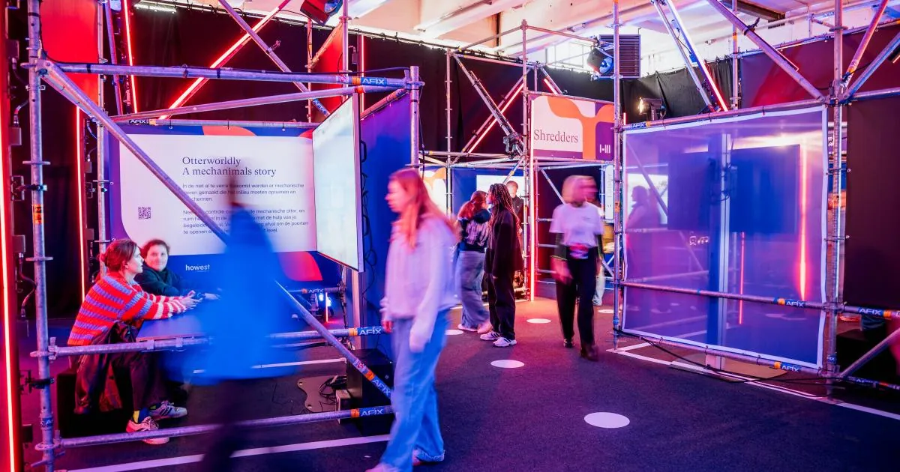
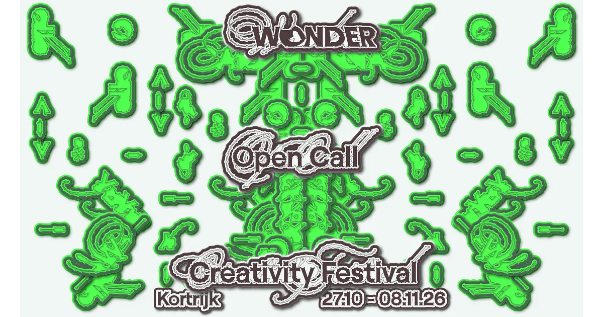
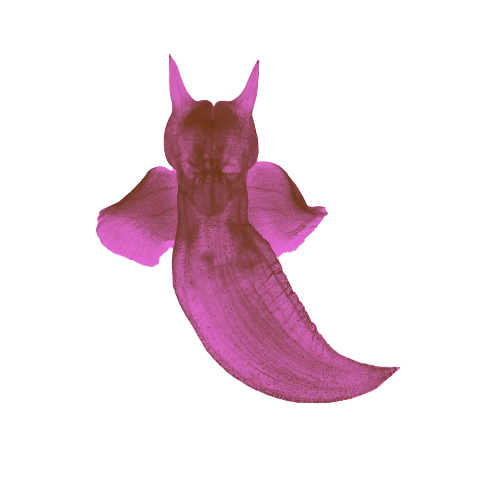

The 2026 calendar of IT & tech events · 30 km of Beveren-Leie
Kortrijk Xpo and Howest do all the lifting. Inside a strict 30 km radius from Castor[20], the IT-event calendar is essentially Kortrijk (~13 km). Four named Xpo trade shows. Two Howest campus days. A four-event city-festival cluster collapsed into late October.
Ghent's bigger dev-community scene is ~36 km away[2] — just outside the circle. So community life within the radius is sporadic: a handful of meetups (BJUG, K-Tech, DigiPinguïns) and the steady monthly drumbeat of CoderDojo Waregem at the closest tech venue to Castor.
If you pick one window for a Castor weekend + tech, this is it. The umbrella Flanders Technology & Innovation festival[19] opens 16 Oct across eight cities; Kortrijk's leg is curated by Hangar K[18]. Three more festivals fold into the same fortnight — paid deep tracks at UNWRAP, free-to-mixed city programming everywhere else.

FTI KortrijkHangar K-curated city festival around gaming, EdTech and design. Day & evening programme across multiple venues.[10]
Mixed
WONDERMulti-venue trail across Kortrijk celebrating design, innovation, technology and art. UNESCO City of Design.[12]
MixedDigital-entertainment summit, 10 tracks: Game Tech, AI, VFX, Open Source, Music Innovation, Career. Sint-Martens-Latemlaan 1B.[11]
Paid
MutationTheme “Why Tech”: AI, Bring-Your-Own-Beamer, hackathons, textile-tech, biology, music.[13]
MixedSoftware-developer community life within 30 km is thin and Kortrijk-centric. Plan around individual sessions, not annual conferences. Re-check pages close to your trip — these cadences drift.
Free monthly Saturday coding sessions 09:30–12:15 for kids 7–17 at Bibliotheek Waregem, Boekenplein 1. Eventbrite registration.[17]
Visits Kortrijk roughly 1–2× per year at Sweet Mustard (Nijverheidskaai 3). One confirmed 2026 evening in Kortrijk; most other dates are Gent.[14]
Kortrijk-Technology group covering IoT, cloud, AI, robotics, automation and blockchain. Lean Coffee evening discussion at Nijverheidskaai 3.[15]
Kortrijk-region FOSS/Linux meetup. Occasional evenings, bring-your-laptop format.[16]
The 30 km radius cuts Ghent off by 6 km[2] — and Ghent is where the larger Belgian dev-community calendar actually lives.
Each row is a month, 1 → 31 left-to-right. Chip width approximates date span; chip colour names the venue family (see legend). Quiet months are dimmed. The boxed convergence panel is the year's peak — late-Oct/early-Nov city-festival cluster.
Dates verified against organiser sites May 2026. Meetup cadences drift; re-check before booking.